Modelling the Rocket: From Real Parts to Stability in Calibers
A rocket that will actually be built, part by part: a printed nose, a cardboard tube, MDF fins, the motor mount with its block and retainer, a baffle and a parachute. With every mass in place, OpenRocket tells where the centre of gravity and the centre of pressure are, and whether the rocket will fly straight.
OpenRocket · Tutorial 1.1
Modelar el cohete: de las piezas reales a la estabilidad en calibres
Un cohete que de verdad se va a construir, pieza por pieza: nariz impresa, tubo de cartón, aletas de MDF, el porta motor con su tope y su retén, un deflector y el paracaídas. Con cada masa en su lugar, OpenRocket dice dónde están el centro de gravedad y el centro de presión, y si el cohete volará derecho.
OpenRocket · Tutorial 1.1
Die Rakete modellieren: von echten Bauteilen zur Stabilität in Kalibern
Eine Rakete, die wirklich gebaut wird, Teil für Teil: gedruckte Spitze, Papprohr, MDF-Flossen, die Motorhalterung mit Anschlag und Halteclip, ein Prallblech und der Fallschirm. Mit jeder Masse an ihrem Platz zeigt OpenRocket, wo Schwerpunkt und Druckpunkt liegen und ob die Rakete gerade fliegt.
Estimated reading: 50 minLectura estimada: 50 minLesedauer: ca. 50 minLevel: undergraduateNivel: licenciaturaNiveau: BachelorVerified on OpenRocket 24.12 (Windows 11)Verificado en OpenRocket 24.12 (Windows 11)Geprüft mit OpenRocket 24.12 (Windows 11)
Full English translation in preparation. Each section below carries a summary of its content; the complete text, figures and tables are available in the Spanish version, which the ES button above selects.
Model in OpenRocket the low-power rocket of the course project with the materials that will actually be used (printed PLA, cardboard, MDF), define a material the program lacks, assemble the motor mount with engine block and retainer, the centering rings, the fin tabs, a baffle and the parachute, load Estes B6-4 and C6-5 motors, and read the stability margin in calibers from the component analysis.
The idea
Centre of gravity, centre of pressure and the margin in calibers
A rocket flies straight if its centre of pressure lies behind its centre of gravity. The margin is (x_CP − x_CG)/d, in calibers; the usual target is 1 to 2. OpenRocket computes the centre of pressure with the Barrowman method, a weighted average of the components' normal-force slopes: here the nose contributes 2.0 and the fins 11.08 of a total of 13.08.
The project
From the real parts to OpenRocket components
The example rocket is 44 cm long and 3.4 cm in diameter, with an 18 mm motor mount. Each real part is mapped to an OpenRocket component; the retainer and the baffle have no component of their own and are modelled as a mass component and as a centering ring with a hole.
Orientation
The window, the tree and the component palette
OpenRocket has three tabs (Rocket design, Motors & Configuration, Flight simulations). The tree shows the rocket's components; a new component is added inside the one selected in the tree. A parts catalogue opens before every new component and is closed to configure it by hand.
Step 1
The printed nose and the cardboard tube
An ogive nose of 9 cm in PLA (100 % infill, 1.25 g/cm³) with a capped shoulder of 3 cm weighs 18.08 g; the 35 cm cardboard tube, 3.4/3.2 cm, weighs 24.67 g. Outer diameter, inner diameter and wall thickness are linked fields.
Step 2
MDF fins and a material of your own
OpenRocket has no MDF: it is added as a custom material of 0.75 g/cm³. Three trapezoidal fins of 3 mm (root 6, tip 3, height 4.5, sweep 3 cm) weigh 13.67 g before the tabs.
Step 3
The motor mount, the engine block and the retainer
An inner tube of 7 cm, 1.9/1.8 cm, is marked as motor mount with 0.5 cm of overhang. The engine block is created with zero wall and at the bottom of the mount, where the motor goes; it must be moved to the top and given a 3 mm wall. The retainer is a 3 g mass component.
Step 4
Centering rings, fin tabs and the baffle
Two printed centering rings hold the mount; the fin tabs, whose height is 0 by default, are computed automatically to reach the mount between the rings (5.7 × 0.75 cm, +2.9 g). The baffle is a centering ring with a 1 cm hole in the middle of the tube.
Step 5
Launch lug, parachute and shock cord
A launch lug for a 1/8 in rod, a 30 cm thin polyethylene parachute with thread lines (the default elastic-cord lines would weigh 3 g more) and an 80 cm shock cord.
Step 6
An Estes B6-4 and a C6-5 as flight configurations
Each motor is a flight configuration created with New Configuration. The motor dialog is taller than a 1080-pixel screen; limiting the diameter to the mount leaves the 18 mm motors, and the ejection delay is typed in.
Step 7
Reading the margin in the component analysis
Tools ▸ Component analysis lists mass, CG, CP and normal-force slope per component and copies with Ctrl+A, Ctrl+C. With motor the margin is 1.62 calibers (B6-4) and 1.45 (C6-5); without motor 2.46.
Suggested practice
Balsa instead of MDF
Replace the MDF of the fins with balsa and record mass, CG and margin with both motors.
Key points
What to keep from this guide
Every part with its real material and mass; the centre of pressure comes from the outer shape, the centre of gravity from every mass; the margin is read with the motor installed.
Common mistakes
Where OpenRocket does not do what one expects
Adding a component with the wrong parent selected, the engine block defaults, the position reference that keeps the old place, the tabs left at height 0, the parachute lines, and the save dialog.
Sources
References
OpenRocket documentation; Barrowman (1967); Niskanen (2009); Estes motor data; NAR Model Rocket Safety Code.
Objetivos de aprendizaje
Qué se debe poder hacer al terminar
Este es el primer tutorial de la serie y parte de cero: no supone haber abierto OpenRocket antes. Su tema es el cohete del proyecto de la materia, uno de baja potencia para un motor Estes B o C, construido con materiales sencillos: tubo de cartón, piezas impresas en 3D y aletas de MDF o de balsa. Al terminar esta guía debe ser posible:
Traducir cada pieza real del cohete al componente de OpenRocket que la representa, con su material y su masa.
Definir en OpenRocket un material que el programa no trae, como el MDF.
Armar el porta motor con su tope y su retén, los anillos centradores, las pestañas de las aletas, un deflector, el paracaídas y el cordón de amarre.
Cargar motores Estes B6-4 y C6-5 como configuraciones de vuelo.
Leer el centro de gravedad, el centro de presión y el margen de estabilidad en calibres, y comprobar ese margen a mano con la tabla del análisis de componentes.
Qué hace falta. OpenRocket 24.12 (openrocket.info), que es gratuito y trae su propio Java. La guía se verificó en Windows 11 con el instalador oficial, que pide permisos de administrador. El diseño terminado se puede descargar, cohete-ejemplo.ork, para compararlo con el propio; se abre con File ▸ Open.
La idea
Centro de gravedad, centro de presión y el margen en calibres
Un cohete en vuelo puede girar alrededor de su centro de gravedad (CG). Si una ráfaga lo inclina, el aire que llega de lado empuja sobre todo el cuerpo, y la resultante de ese empuje actúa en un punto llamado centro de presión (CP). Cuando el CP está detrás del CG, esa fuerza endereza al cohete, como el viento a una veleta; cuando está delante, lo hace girar más, y el cohete da vueltas en lugar de subir.
Figura 1.El cohete de esta guía, con su centro de presión y sus centros de gravedad. Perfil a escala con las medidas del diseño (dos de las tres aletas a la vista). El CP (rojo) es el mismo con motor o sin él, porque depende sólo de la forma exterior; el CG (azul) se mueve hacia la cola al poner el motor, y más con el C6, que pesa más. La barra de abajo es la distancia que define el margen de estabilidad para el C6-5.
La distancia entre los dos puntos se mide en calibres, es decir, en diámetros del cuerpo:
con las posiciones medidas desde la punta de la nariz. Para el cohete de esta guía con el motor C6-5, \(x_{CP}\) = 34.94 cm, \(x_{CG}\) = 30.01 cm y \(d\) = 3.4 cm, de modo que el margen es \((34.94 - 30.01)/3.4 = 1.45\) calibres, la misma cifra que escribe OpenRocket junto a la vista del cohete. Como regla práctica del modelismo se busca un margen entre 1 y 2 calibres: con menos de 1, el cohete puede oscilar o perder el rumbo con viento; con más de 2 es «sobreestable» y tiende a girar hacia el viento al dejar la varilla.
De dónde sale el centro de presión
OpenRocket calcula el CP con el método de Barrowman: a cada componente exterior le asigna una pendiente de fuerza normal, \(C_{N\alpha}\), y un punto de aplicación, y el CP del cohete es el promedio de esos puntos pesado por las pendientes:
En este cohete sólo dos componentes tienen \(C_{N\alpha}\): la nariz, con 2.00 aplicado en 4.15 cm, y las aletas, con 11.08 aplicado en 40.49 cm (tabla 2). La ecuación (2) da \((2.00 \times 4.15 + 11.08 \times 40.49)/(2.00 + 11.08) = 34.94\) cm, el CP que reporta el programa. Las aletas aportan el 85 % de la fuerza normal y están en la cola: son ellas las que llevan el CP hacia atrás. Sin aletas, el CP sería el de la nariz, a 4.15 cm de la punta, delante de cualquier CG posible, y el cohete sería inestable.
Dos consecuencias que ordenan el resto de la guía. El CP depende sólo de la forma exterior; el CG depende de todas las masas, también las que van por dentro. Por eso el modelo tiene que llevar cada pieza con su material real: un tope del motor sin masa o un paracaídas con las líneas equivocadas mueven el CG, y con él el margen.
El proyecto
De las piezas reales a los componentes de OpenRocket
El proyecto pide un cohete de baja potencia para un motor Estes B o C, con tubo de cartón, piezas impresas en 3D, aletas de balsa o MDF, paracaídas y retención del motor. El de esta guía es un ejemplo que cumple esos requisitos; cada equipo cambiará las medidas, pero las piezas y su orden de montaje son los mismos.
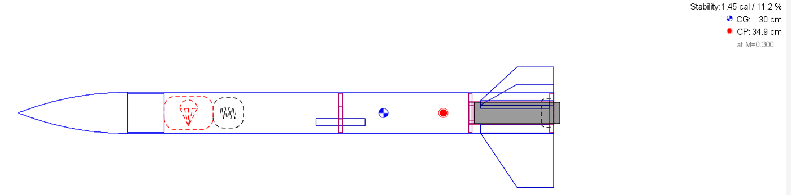
Figura 2.El cohete terminado, en la vista de OpenRocket. Con la configuración de vuelo [C6-5]. De izquierda a derecha: el hombro de la nariz (rectángulo), el paracaídas (rojo, punteado), el cordón, el deflector a la mitad del tubo, el CG (azul y blanco), el CP (rojo), el anillo delantero, el porta motor con el motor (gris) y las aletas. Arriba a la derecha, el margen («Stability: 1.45 cal / 11.2 %»), el CG y el CP.
El primer trabajo es decidir con qué componente de OpenRocket se representa cada pieza real, y dentro de cuál va, porque el programa arma el cohete como un árbol: la nariz y el tubo cuelgan de la etapa, y todo lo demás cuelga del tubo o del porta motor.
Pieza real
Componente de OpenRocket
Dentro de
Material
Medidas
Nariz impresa
Nose Cone
Sustainer
PLA al 100 %
ojiva de 9 cm; pared 0.15; hombro 3.2 × 3 con tapa
Tabla 1.Las piezas del cohete y su componente en OpenRocket. Medidas en centímetros; en los tubos y anillos, diámetro exterior / interior. «Dentro de» es el componente que hay que tener seleccionado en el árbol al agregar la pieza. Las medidas se leen del archivo del diseño, cohete-ejemplo.ork.
El porta motor es un tubo de 18 mm de diámetro interior, la medida de los motores Estes B y C, sostenido dentro del tubo grande por dos anillos centradores.
El tope del motor es un anillo corto pegado al frente del porta motor; impide que el empuje meta el motor dentro del cohete.
El retén (un gancho metálico o una tapa) impide lo contrario: que la carga de expulsión, que se dispara hacia adelante, eche el motor por detrás en lugar de sacar el paracaídas.
Las pestañas de las aletas atraviesan la pared del tubo y se apoyan en el porta motor, entre los dos anillos, que las sujetan. Una aleta así no se despega con el golpe del aterrizaje.
El deflector es un anillo con un orificio pequeño entre el motor y el paracaídas: frena los gases calientes de la carga de expulsión, que quemarían el paracaídas, pero deja pasar la presión que empuja la nariz hacia afuera.
Dos piezas sin componente propio. OpenRocket no tiene un componente «retén» ni uno «deflector». El retén se modela como una masa (Mass Component), y el deflector, como un anillo centrador al que se le escribe el diámetro del orificio. Lo que importa para la estabilidad es que su masa esté en el lugar correcto.
Orientación
La ventana, el árbol y la paleta de componentes
Al abrir OpenRocket se muestran la ventana de bienvenida y las notas de la versión; al cerrarlas queda la ventana principal con un diseño nuevo.
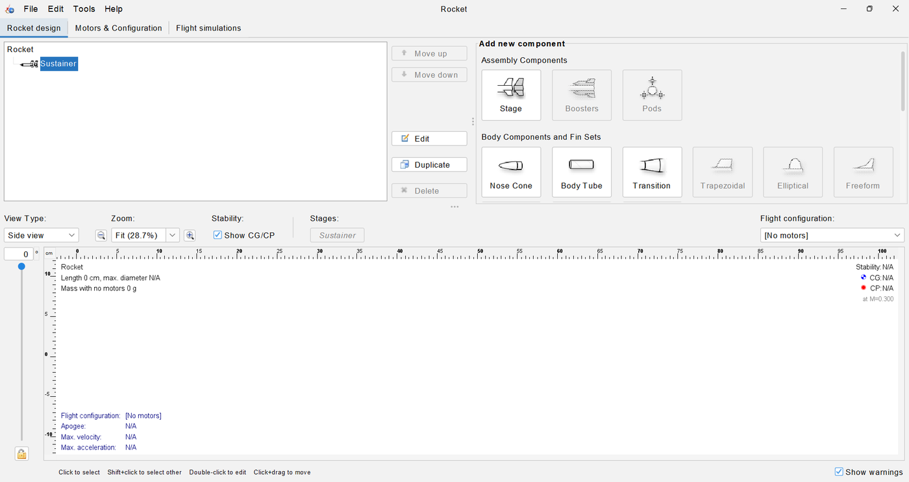
Figura 3.OpenRocket al crear un diseño nuevo. Arriba, las tres pestañas; a la izquierda, el árbol con el cohete (Rocket) y su etapa (Sustainer); a la derecha, la paleta Add new component, que sólo activa los componentes que caben dentro del seleccionado. Abajo, la vista del cohete, todavía vacía.
Las pestañas de arriba: Rocket design, donde se arma el cohete; Motors & Configuration, donde se eligen los motores (paso 6); y Flight simulations, que esta guía no usa.
El árbol, a la izquierda. El cohete (Rocket) tiene una etapa, Sustainer, y dentro de ella van los componentes. Un doble clic en un componente abre su cuadro de configuración.
La paleta Add new component, a la derecha. Un clic en un botón agrega ese componente dentro del que está seleccionado en el árbol, y sólo se activan los botones de los componentes que caben ahí. Antes de cada clic en la paleta hay que seleccionar el padre que indica la columna «Dentro de» de la tabla 1. La paleta tiene más grupos de los que caben a la vista (Inner Components, Mass Components); se recorre con la barra de desplazamiento de su derecha.
La vista del cohete, abajo. Dibuja el cohete de perfil, marca el CG (círculo azul y blanco) y el CP (círculo rojo), y escribe arriba a la derecha el margen de estabilidad en calibres y en porcentaje de la longitud. Abajo, Flight configuration elige el motor con el que se calculan esas cifras.
El catálogo que aparece primero. Al agregar casi cualquier componente, OpenRocket abre antes Choose component preset, un catálogo de piezas comerciales (tubos, anillos y narices de fabricantes estadounidenses). Las piezas de este proyecto no vienen de ahí: se cierra con Close y aparece el cuadro de configuración del componente. Si se desmarca Always open this dialog when creating a new …, el catálogo deja de abrirse para ese tipo de componente.
Cómo se coloca una pieza
Los cuadros de las piezas interiores tienen un recuadro Placement con dos campos: Position relative to, que elige la referencia (Top, Middle o Bottom of the parent component, es decir, el frente, la mitad o el final del padre), y plus, el desplazamiento desde esa referencia, positivo hacia la cola. Un anillo con Bottom y plus 0 queda al final del tubo; con plus −6.7, 6.7 cm más adelante. Las unidades son centímetros y gramos.
Guardar el diseño
File ▸ Save As abre primero Save Design Info, un cuadro opcional con el nombre del diseño, el autor y una descripción; su Design name es el nombre que el cohete muestra en el árbol. Después aparece el cuadro de guardar de Java.
El cuadro de guardar no acepta rutas. Escribir una ruta con \ o con / en el nombre de archivo da «Illegal filename», y escribir el nombre de una carpeta que no existe guarda un archivo con ese nombre. Hay que llegar a la carpeta haciendo doble clic en las carpetas de la lista. Además, en una computadora con OneDrive, la carpeta Documents del cuadro es OneDrive\Documentos, no la carpeta Documentos local.
Paso 1
La nariz impresa y el tubo de cartón
La nariz y el tubo forman la forma exterior del cohete: son lo primero porque los demás componentes toman de ellos sus diámetros.
La nariz
Seleccionar Sustainer en el árbol y hacer clic en Nose Cone. Cerrar el catálogo con Close. Se abre Nose Cone configuration, con una nariz de 15 cm de poliestireno y 31.5 g.
En Component name, escribir Nariz.
Pestaña General: Nose cone shape en Ogive, Length 9, Base diameter 3.4 y Wall thickness 0.15. El cuadro de la derecha explica cada forma; con Shape parameter 1 la ojiva es tangente al tubo.
En Component material, abrir la lista. Arriba tiene un campo, «Enter the material name»: escribir PLA y elegir PLA - 100% infill (1.25 g/cm³). Con estas medidas y este material, la masa es de 11.5 g.
Pestaña Shoulder: Diameter 3.2 (el interior del tubo), Length 3, Thickness 0.15 y marcar End capped, la tapa donde se amarra el cordón. La masa sube a 18.1 g.
OK.
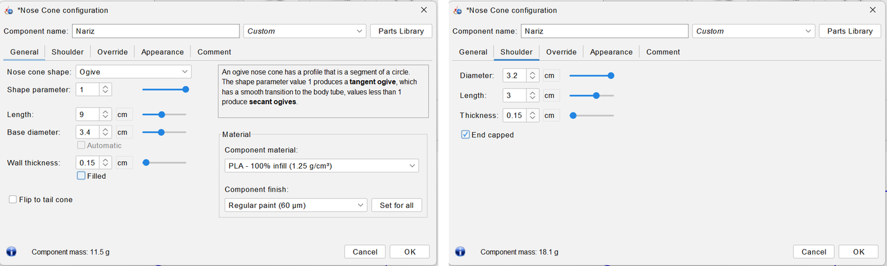
Figura 4.La nariz impresa. Pestaña General (izquierda), con la ojiva de 9 cm, la pared de 1.5 mm y el PLA; pestaña Shoulder (derecha), con el hombro que entra en el tubo y su tapa (End capped). Abajo a la izquierda de cada una, la masa: 11.5 g sin el hombro y 18.1 g con él.
El PLA de OpenRocket es macizo. El material de la lista supone relleno al 100 %. Una nariz impresa con menos relleno pesa menos, y la diferencia mueve el CG. Cuando la pieza ya esté impresa conviene pesarla y comparar; OpenRocket tiene para eso la pestaña Override de cada componente, que esta guía no usa.
El tubo
Con Sustainer seleccionado, Body Tube y Close en el catálogo.
Component name: Tubo. Length 35. Outer diameter se queda en Automatic: toma los 3.4 cm de la base de la nariz.
Wall thickness 0.1: el diámetro interior pasa solo a 3.2. El material ya es Cardboard (0.68 g/cm³).
OK. La masa del tubo es de 24.7 g y el cohete mide ya 44 cm.
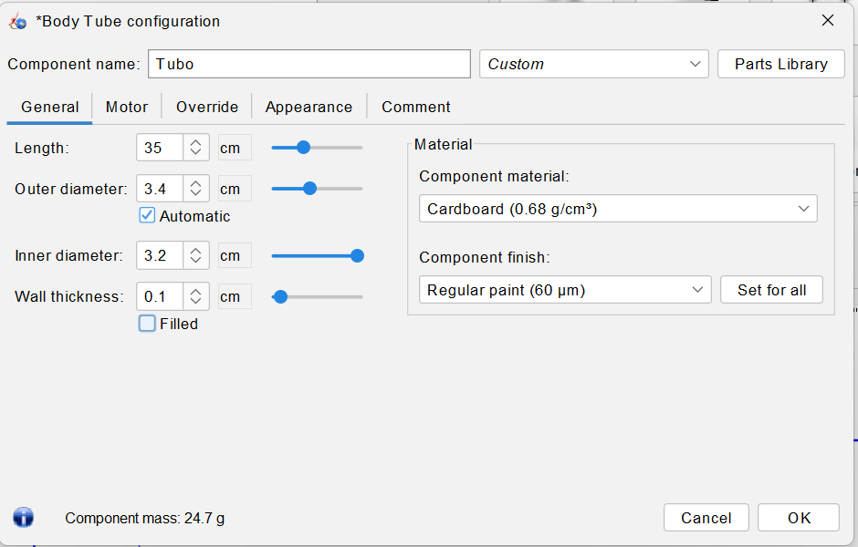
Figura 5.El tubo de cartón. El diámetro exterior queda en Automatic: lo toma de la base de la nariz. El interior y el espesor de pared están ligados; al escribir 0.1 en la pared, el interior pasa a 3.2 cm.
Tres campos ligados. Diámetro exterior, diámetro interior y espesor de pared no son independientes: al cambiar uno, OpenRocket ajusta otro. En el tubo, escribir la pared cambia el interior; en la guía de lanzamiento (paso 5), escribir el interior conserva la pared y cambia el exterior. Después de escribir un diámetro hay que revisar los otros dos.
Paso 2
Aletas de MDF y un material propio
Las aletas son de MDF de 3 mm. OpenRocket no trae ese material (sí trae balsa, contrachapado y varios cartones), así que primero se define.
Seleccionar Tubo en el árbol y hacer clic en Trapezoidal. No abre catálogo.
Component name: Aletas. Number of fins 3, Root chord 6, Tip chord 3, Height 4.5, Sweep length 3; el Sweep angle se calcula solo (33.7°). Fin cross sectionSquare (canto recto, sin perfilar) y Thickness 0.3.
Placement: Bottom of the parent component, plus 0. Las aletas quedan al ras del final del tubo.
Abrir la lista Component material y elegir, al fondo, Custom ▸ Add custom material. En Custom material: Material nameMDF, Material density 0.75 g/cm³, Material groupCustom. OK.
El material de las aletas queda como (ud) MDF (0.75 g/cm³). OK.
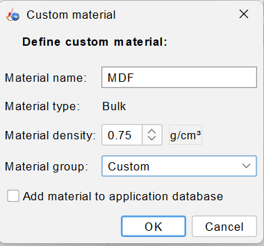
Figura 6.Un material que OpenRocket no trae.Custom material, desde la lista de materiales. Con Add material to application database sin marcar, el MDF sólo existe en este diseño.
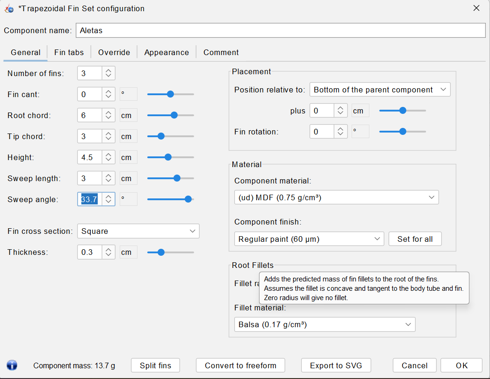
Figura 7.Las aletas. Tres aletas de raíz 6 cm, punta 3 cm, altura 4.5 cm y flecha 3 cm; el ángulo de flecha (33.7°) lo calcula el programa. El material aparece como «(ud) MDF», de user defined. Masa: 13.7 g, todavía sin pestañas.
Con las aletas, la vista marca por primera vez el CP en la cola. La densidad del MDF varía con el fabricante, entre unos 0.6 y 0.8 g/cm³; la forma más segura de conocerla es pesar una placa y dividir entre su volumen. La pestaña Fin tabs se deja para el paso 4: su cálculo automático se apoya en el porta motor y en los anillos, que todavía no existen.
Las plantillas de corte. El botón Export to SVG del mismo cuadro guarda el contorno de la aleta a escala, listo para una cortadora láser o para imprimirlo como plantilla.
Paso 3
El porta motor, el tope y el retén
El porta motor es un tubo interior; lo que lo distingue es una casilla que le dice a OpenRocket que ahí va el motor.
El porta motor
Seleccionar Tubo y, en el grupo Inner Components de la paleta, Inner Tube; Close en el catálogo.
Component name: Porta motor. Revisar que Length sea 7, Outer diameter 1.9 e Inner diameter 1.8 (pared de 0.05), con Placement en Bottom, plus 0, y material Cardboard: en esta versión el tubo interior ya nace con esos valores, los de un porta motor de 18 mm.
Pestaña Motor: marcar This component is a motor mount y escribir Motor overhang 0.5, lo que el motor sobresale por detrás del porta motor.
OK. Masa: 1.38 g.
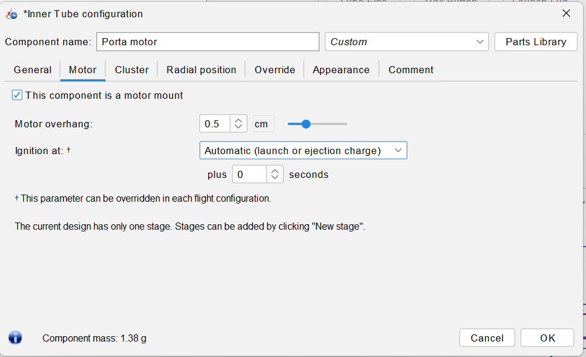
Figura 8.El tubo interior se vuelve porta motor. En la pestaña Motor del Inner Tube: la casilla This component is a motor mount y el voladizo del motor (Motor overhang), lo que el motor sobresale por detrás.
El tope del motor
Seleccionar Porta motor en el árbol y hacer clic en Engine Block; Close en el catálogo.
Component name: Tope del motor. Length 0.5. El diámetro exterior queda en Automatic (1.8). Escribir Inner diameter 1.2: la pared queda en 0.3.
Position relative to: Top of the parent component. Revisar plus: si dice 6.5, escribir 0.
OK. Masa: 0.48 g.
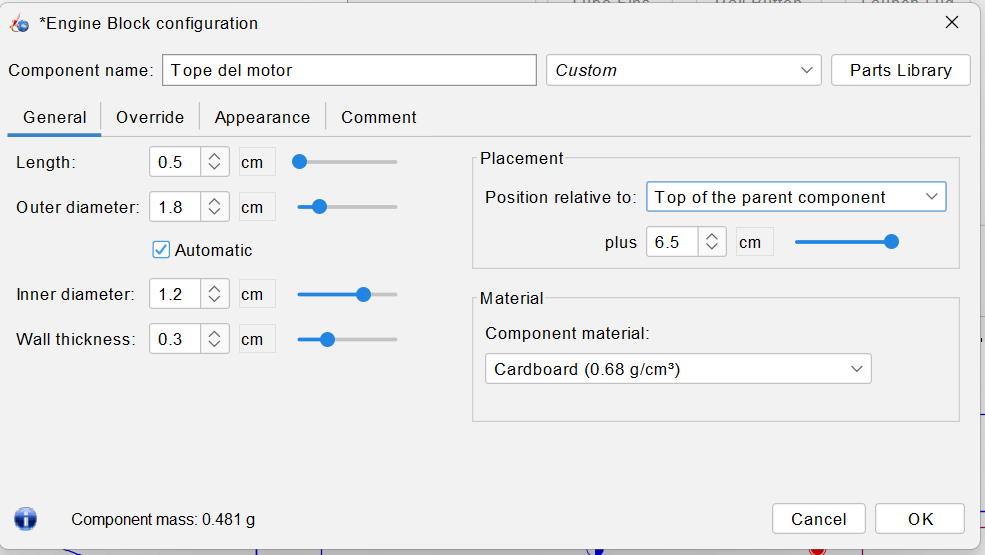
Figura 9.El tope del motor, a medio corregir. Se cambió la referencia a Top of the parent component y se le dio pared de 3 mm, pero el desplazamiento quedó en plus 6.5: OpenRocket conservó el lugar donde estaba el tope, al fondo. Hay que escribir 0.
El tope nace en el lugar del motor y sin masa. OpenRocket crea el Engine Block con pared 0, es decir, sin masa, y al fondo del porta motor, que es justo donde va el motor. Además, al cambiar la referencia a Top, el programa conserva el lugar que tenía la pieza y ajusta plus para lograrlo: el tope sigue al fondo, ahora a «6.5 cm del frente». Esto vale para cualquier componente: después de cambiar Position relative to siempre hay que revisar plus.
El retén
Con Porta motor seleccionado, en el grupo Mass Components, Mass Component.
Component name: Retén del motor. Mass 3 g, Length 1, Diameter 2.4. Placement: Bottom, plus 0.
OK.
Los 3 g son una estimación para un gancho metálico; con la pieza real en la mano, se pesa y se corrige. Como es una masa en la cola, cada gramo de más reduce el margen.
Paso 4
Anillos centradores, pestañas de las aletas y el deflector
Los anillos centradores
Seleccionar Tubo y hacer clic en Centering Ring; Close en el catálogo.
Component name: Anillo trasero. Thickness 0.3. Los diámetros quedan en Automatic: el exterior toma el interior del tubo (3.2) y el interior, el exterior del porta motor (1.9).
Placement: Bottom, plus 0. Material: PLA - 100% infill. OK. Masa: 1.95 g.
Con el anillo seleccionado, Duplicate. Abrir la copia con doble clic, llamarla Anillo delantero y escribir plus −6.7: queda en el frente del porta motor, entre 37.0 y 37.3 cm de la punta.
Las pestañas de las aletas
Doble clic en Aletas y pestaña Fin tabs. Tab height está en 0: la pestaña existe, pero no tiene altura ni masa.
Hacer clic en Calculate automatically. OpenRocket ajusta la pestaña para que llegue a la pared del porta motor y quepa entre los dos anillos: Tab length 5.7, Tab height 0.75, Tab position −0.15 respecto a la mitad de la raíz.
OK. Las aletas pasan de 13.7 a 16.6 g.
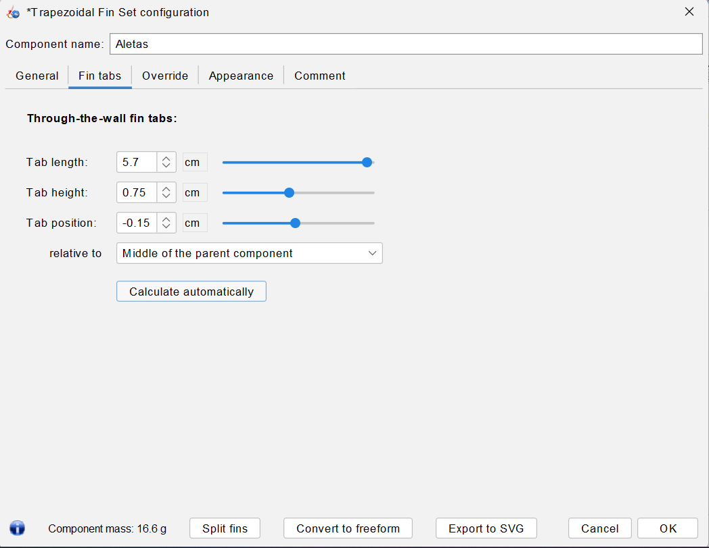
Figura 10.Las pestañas de las aletas. Después de Calculate automatically: 5.7 cm de largo y 0.75 cm de alto, centradas 0.15 cm adelante del centro de la raíz. La masa de las aletas sube de 13.7 a 16.6 g.
La altura de 0.75 cm es la distancia del exterior del tubo (radio 1.7) al exterior del porta motor (radio 0.95): la pestaña atraviesa la pared del tubo y toca el porta motor. El largo es el hueco entre el frente de la raíz y el anillo trasero.
El deflector
Con Tubo seleccionado, otro Centering Ring; Close en el catálogo.
Component name: Deflector. Thickness 0.3. Escribir Inner diameter 1: la casilla Automatic de ese diámetro se desmarca sola, y ese diámetro es el orificio.
Placement: Bottom, plus −17.35: el deflector queda centrado a la mitad del tubo, en 26.5 cm. Material: PLA - 100% infill. OK. Masa: 2.72 g.
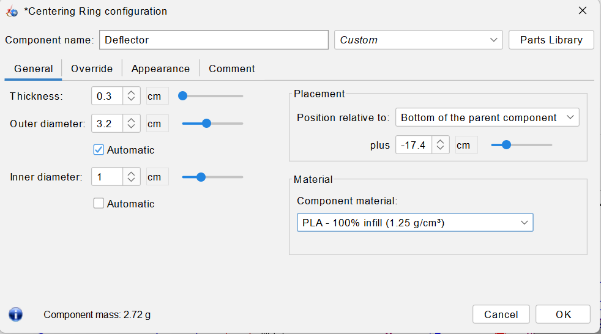
Figura 11.El deflector. Un Centering Ring de PLA con el diámetro interior escrito (1 cm, sin Automatic). El campo plus muestra −17.4, redondeado: el valor guardado es −17.35 cm.
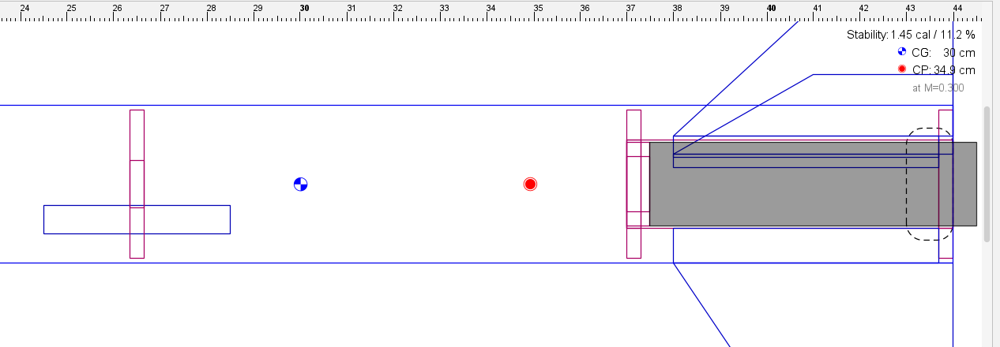
Figura 12.La cola por dentro. Vista al 100 %, de los 24 cm a la cola. La pestaña (rectángulo delgado sobre el porta motor) llega al porta motor y queda entre el anillo delantero (en 37 cm) y el trasero (al final del tubo). A la izquierda, el deflector a la mitad del tubo, con el orificio dibujado como un hueco en el centro.
¿Dónde va el deflector? Entre el porta motor y el paracaídas; dentro de ese tramo, el lugar casi no cambia la estabilidad, porque pesa menos de 3 g. Se probaron dos posiciones: a 3.7 cm del porta motor y a la mitad del tubo. Pasarlo a la mitad del tubo adelantó el CG 0.2 cm y subió el margen en 0.06 calibres. Lo que sí cambia es el espacio para el paracaídas: delante del deflector quedan unos 14 cm de tubo libre.
Paso 5
Guía de lanzamiento, paracaídas y cordón
La guía de lanzamiento
Con Tubo seleccionado, Launch Lug (en la paleta, junto a Rail Button); Close en el catálogo.
Component name: Guía de lanzamiento. Length 4. Inner diameter 0.4, para la varilla de 1/8 in (3.2 mm). El espesor se conserva en 0.1 y el exterior pasa a 0.6.
Revisar Placement: Middle of the parent component, plus 0 y Rotation 180, entre dos aletas; así viene. Material Cardboard. OK. Masa: 0.43 g.
El paracaídas
Con Tubo seleccionado, en Mass Components, Parachute; Close en el catálogo.
Component name: Paracaídas. Canopy: Diameter 30 y material Polyethylene (thin), el de una bolsa de plástico.
Shroud lines: Number of lines 6, Line length 30. En Material, cambiar el cordón elástico que trae por hilo: Kevlar thread 138 (0.4 mm, 1/64 in).
Placement: Top, plus 3 (justo detrás del hombro de la nariz). Packed length 4 y Packed diameter 2.8, el paracaídas doblado.
Deployment: Deploys atFirst ejection charge of this stage, plus 0 s. OK. Masa: 1.33 g.
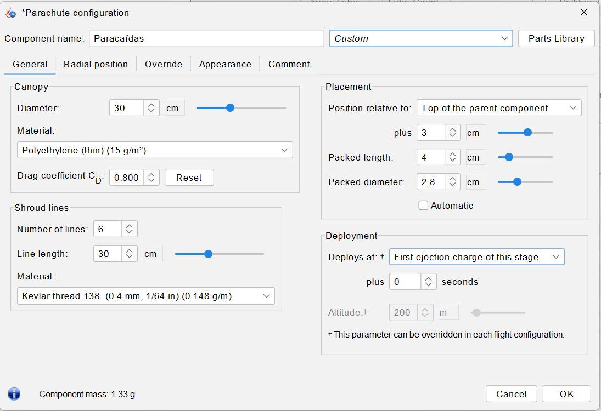
Figura 13.El paracaídas. Polietileno delgado de 30 cm, seis líneas de hilo de 0.4 mm, plegado en 4 × 2.8 cm junto a la nariz, y abierto por la carga de expulsión (First ejection charge of this stage). Masa: 1.33 g.
Las líneas que trae el paracaídas pesan más que el paracaídas. OpenRocket propone líneas de cordón elástico de 2 mm: con ellas, el mismo paracaídas pesa 4.3 g. Con hilo de 0.4 mm pesa 1.33 g. Son 3 g en la parte delantera del cohete, que aquí harían ver el margen mejor de lo que es.
El cordón de amarre
Con Tubo seleccionado, Shock Cord.
Component name: Cordón de amarre. Shock cord length 80, material Elastic cord (round 2 mm, 1/16 in).
Placement: Top, plus 7; Packed length 2.5, Packed diameter 2.5. OK. Masa: 1.44 g.
El cohete está completo: 73.99 g sin motor. Es buen momento para guardarlo.
Paso 6
Un Estes B6-4 y un C6-5 como configuraciones de vuelo
En OpenRocket, cada motor que se quiera probar es una configuración de vuelo. El nombre del motor dice lo esencial: en C6-5, la C es la clase de impulso total (cada letra duplica a la anterior: una C tiene hasta el doble que una B), el 6 es el empuje medio en newtons y el 5 son los segundos entre el fin de la combustión y la carga de expulsión.
Pestaña Motors & Configuration. En Motor mounts ya aparece Porta motor marcado: es el efecto de la casilla del paso 3.
New Configuration. Se abre Select a rocket motor.
Marcar Limit motor diameter to mount diameter: la lista se reduce a los motores de 18 mm. OpenRocket recuerda la casilla, así que la siguiente vez ya aparece marcada.
Escribir C6 en Search y elegir la fila Estes (la tercera: antes vienen el WECO Feuerwerk y el Quest). En Ejection charge delay, escribir 5.
OK. La configuración aparece como [C6-5].
Repetir con New Configuration: B6 en Search (el Estes es la primera fila) y retardo 4: [B6-4].
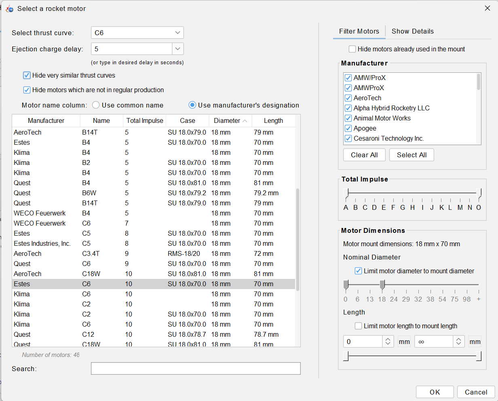
Figura 14.La elección del motor. Con Limit motor diameter to mount diameter quedan los motores de 18 mm (46 en la base de datos de esta versión). Está elegido el Estes C6 y el retardo escrito, 5 s. La ventana se subió hasta el borde de la pantalla para que se vieran el buscador y el botón OK.
El cuadro de motores no cabe en la pantalla. En una pantalla de 1080 píxeles de alto, Select a rocket motor queda más alto que el espacio libre: el campo de búsqueda (Search) y los botones OK y Cancel quedan debajo de la barra de tareas, y la tecla Enter no lo cierra. Hay que arrastrarlo por su barra de título hasta el borde superior de la pantalla.
De vuelta en Rocket design, la lista Flight configuration de la vista ofrece [No motors], [C6-5] y [B6-4]. Al elegir un motor, la vista lo dibuja en gris, recalcula el CG y, abajo a la izquierda, adelanta el resultado de una simulación rápida: con el C6-5, un apogeo de unos 175 m; con el B6-4, de unos 71 m (71.5 m en una corrida y 71.3 m en otra: la simulación rápida no da siempre lo mismo). Esas cifras dependen del lanzamiento y del clima que se supongan, y no son el tema de esta guía; el margen, sí.
Paso 7
Leer el margen en el análisis de componentes
La vista ya escribe el margen, pero la tabla de la que sale permite ver qué pieza pesa cuánto y dónde está, que es lo que hace falta para cambiar el diseño con criterio.
Tools ▸ Component analysis.
Arriba a la derecha, en Motor configuration, elegir [C6-5].
La pestaña Stability muestra una fila por componente: masa propia, masa agregada, CG, CP y \(C_{N\alpha}\). La primera fila, Total (Rocket), es la del cohete completo.
Para llevarse la tabla: hacer clic en ella, Ctrl+A y Ctrl+C. Se copia con todos los decimales, separada por tabuladores, lista para pegarse en una hoja de cálculo.
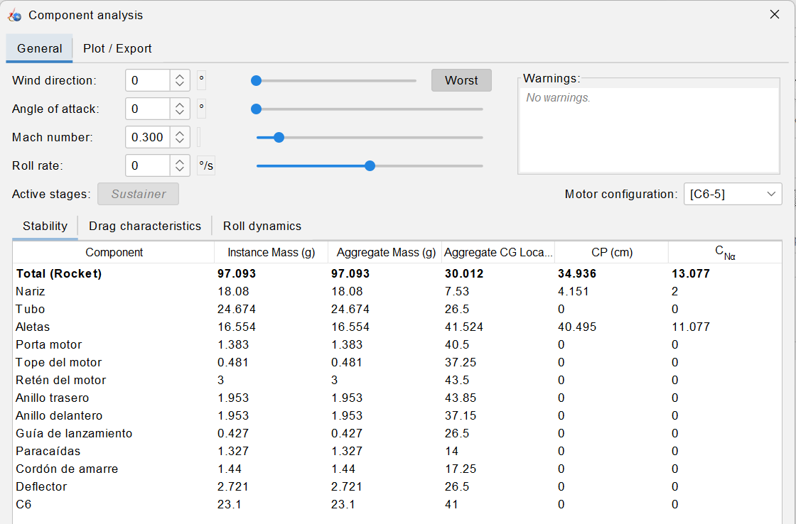
Figura 15.El análisis de componentes.Tools ▸ Component analysis, pestaña Stability, con la configuración [C6-5]. La fila Total (Rocket) da la masa, el CG (30.012 cm) y el CP (34.936 cm). Debajo de la tabla, fuera del recorte, el cuadro indica la longitud de referencia del margen: Reference length: 3.4 cm.
Componente
Masa (g)
CG (cm)
CP (cm)
CNα
Cohete completo
97.09
30.01
34.94
13.08
Nariz
18.08
7.53
4.15
2.00
Tubo
24.67
26.50
—
—
Aletas
16.55
41.52
40.49
11.08
Porta motor
1.38
40.50
—
—
Tope del motor
0.48
37.25
—
—
Retén del motor
3.00
43.50
—
—
Anillo trasero
1.95
43.85
—
—
Anillo delantero
1.95
37.15
—
—
Guía de lanzamiento
0.43
26.50
—
—
Paracaídas
1.33
14.00
—
—
Cordón de amarre
1.44
17.25
—
—
Deflector
2.72
26.50
—
—
Motor Estes C6-5
23.10
41.00
—
—
Tabla 2.El análisis de componentes con el motor C6-5. Copia de la tabla de Tools ▸ Component analysis (pestaña Stability, Mach 0.3, ángulo de ataque 0), redondeada a dos decimales. Las posiciones se miden desde la punta de la nariz. Sólo la nariz y las aletas tienen CNα: el tubo recto no aporta fuerza normal en la teoría de Barrowman, y las piezas internas no tocan el aire.
Con la fila del total y la ecuación (1) se comprueba el margen: \((34.94 - 30.01)/3.4 = 1.45\) calibres. Repetido para las tres configuraciones:
Configuración
Masa (g)
CG (cm)
CP (cm)
CP − CG (cm)
Margen (cal)
Respecto a L
Sin motor
73.99
26.58
34.94
8.35
2.46
19.0 %
Estes B6-4
92.21
29.43
34.94
5.51
1.62
12.5 %
Estes C6-5
97.09
30.01
34.94
4.92
1.45
11.2 %
Tabla 3.El margen de estabilidad en las tres configuraciones. CG y CP de la fila «Total (Rocket)» de cada tabla de Component analysis; el margen se calcula con la ecuación (1), con d = 3.4 cm, y coincide con el que OpenRocket escribe junto a la vista del cohete. La última columna es la misma distancia como fracción de la longitud total (44 cm), la segunda cifra de esa línea.
El margen que importa es el que tiene el cohete con motor. Sin motor, 2.46 calibres parecerían demasiados; pero el cohete nunca vuela sin motor. El B6-4 agrega 18.2 g y el C6-5 23.1 g, casi todo detrás del CG: el CG retrocede y el margen baja a 1.62 y 1.45 calibres, los dos dentro del intervalo de 1 a 2. El margen más pequeño es el del motor más pesado, y es el que hay que revisar primero.
Las piezas internas no mueven el CP. El CP (34.94 cm) es el mismo en las tres filas de la tabla 3 y no cambió al agregar las pestañas ni el deflector, porque van por dentro. Lo que mueven es el CG: las pestañas suman masa en la cola y lo atrasan; una nariz más pesada lo adelanta. Para corregir un margen pequeño hay dos caminos: agrandar las aletas (mueve el CP hacia atrás) o poner peso en la nariz (mueve el CG hacia adelante).
La lista de motores del análisis manda también en la ventana principal. Cambiar Motor configuration dentro de Component analysis cambia la configuración de la vista y marca el diseño como modificado (aparece un asterisco en el título).
Práctica sugerida
Balsa en lugar de MDF
El proyecto admite aletas de balsa o de MDF. Esta práctica mide qué cambia al pasar de una a otra.
Enunciado. En el cohete de esta guía, cambiar el material de las aletas de MDF a balsa, sin tocar su forma ni sus pestañas, y registrar la masa de las aletas, la masa del cohete sin motor y el margen de estabilidad sin motor, con el B6-4 y con el C6-5.
Condiciones. OpenRocket 24.12; el diseño de esta guía o el archivo cohete-ejemplo.ork; margen leído en Component analysis y comprobado con la ecuación (1).
El procedimiento, en corto
Abrir el diseño y guardarlo con otro nombre (File ▸ Save As), para no perder el de MDF.
Doble clic en Aletas; en Component material, Woods ▸ Balsa (0.17 g/cm³). Anotar la masa del pie del cuadro y OK.
Tools ▸ Component analysis; copiar la fila Total (Rocket) con cada una de las tres configuraciones.
Calcular el margen con la ecuación (1) y compararlo con el que escribe la vista.
Registro de resultados
Aletas
Masa de las aletas (g)
Masa sin motor (g)
Margen sin motor (cal)
Margen con B6-4 (cal)
Margen con C6-5 (cal)
MDF (0.75 g/cm³)
16.55
73.99
2.46
1.62
1.45
Balsa (0.17 g/cm³)
Tabla 4.Registro de la práctica. La primera fila es la del cohete de esta guía; la segunda se llena con aletas de balsa.
Preguntas que orientan la lectura
La masa de las aletas, ¿cambia en la proporción de las densidades, 0.17/0.75? ¿Y la masa del cohete sin motor?
¿Se movió el CP? Explicar la respuesta con la ecuación (2).
¿Hacia dónde se movió el CG, y por qué el margen cambió en ese sentido?
Con aletas de balsa, ¿el margen con el C6-5 sigue entre 1 y 2 calibres? Si no, ¿qué cambiaría primero: el tamaño de las aletas o el peso de la nariz?
Puntos clave
Lo que hay que retener
El CP sale de la forma exterior; el CG, de todas las masas. Un modelo con materiales o masas equivocados da un margen equivocado aunque la forma sea perfecta.
El margen se mide en calibres, \((x_{CP} - x_{CG})/d\), y se busca entre 1 y 2 con el motor puesto.
Cada componente se agrega dentro del que está seleccionado. La nariz y el tubo cuelgan de la etapa; el porta motor, los anillos, las aletas y la recuperación, del tubo; el tope y el retén, del porta motor.
Lo que OpenRocket no trae se construye con lo que sí trae: el MDF como material propio, el retén como masa, el deflector como anillo con orificio.
Los valores por omisión no son inocentes: tope sin pared y al fondo, pestañas de altura 0, líneas del paracaídas de cordón elástico.
La tabla de Component analysis se copia con Ctrl+A, Ctrl+C: así las cifras del reporte no se transcriben de la pantalla.
Errores frecuentes
Dónde OpenRocket no hace lo que uno espera
Agregar con el padre equivocado. Si está seleccionada la nariz al hacer clic en Centering Ring, el anillo queda dentro de la nariz. Se corrige borrándolo (Delete) y agregándolo de nuevo con el padre correcto.
Dejar el tope del motor como nace. Pared 0 y al fondo del porta motor: no pesa y está donde va el motor.
Cambiar Position relative to y no revisar plus. OpenRocket conserva el lugar de la pieza y compensa con el desplazamiento.
Calcular las pestañas antes de tener los anillos, o no calcularlas: con Tab height 0 no existen.
Quedarse con las líneas de cordón elástico del paracaídas: 3 g de más en la parte delantera.
Leer el margen sin motor y concluir que el cohete es demasiado estable.
Dejar vacío Design name en Save Design Info al volver a guardar: el cohete vuelve a llamarse Rocket en el árbol.
Escribir una ruta en el cuadro de guardar o buscar el archivo en la carpeta Documentos local cuando el cuadro guardó en la de OneDrive.
Barrowman, J. S. (1967). The practical calculation of the aerodynamic characteristics of slender finned vehicles. Tesis de maestría, The Catholic University of America.
Niskanen, S. (2009). Development of an open source model rocket simulation software. Tesis de maestría, Helsinki University of Technology. Es la documentación técnica original de OpenRocket.
Estes Industries. Motores de modelismo, hojas de datos de los B6-4 y C6-5. estesrockets.com.
National Association of Rocketry. Model Rocket Safety Code. nar.org.
Todas las capturas son de OpenRocket 24.12 en Windows 11, manejado en una pantalla de 1920 × 1080. Las masas, los CG, los CP y los \(C_{N\alpha}\) se copiaron de Component analysis con Ctrl+C, y las medidas se leen del archivo del diseño, que se publica con la guía.
Lernziele
Was Sie danach können sollten
Vollständige deutsche Übersetzung in Vorbereitung. Jeder Abschnitt enthält eine Zusammenfassung; der vollständige Text mit Abbildungen und Tabellen liegt in der spanischen Fassung vor, die über die Schaltfläche ES oben erreichbar ist.
Die Projektrakete in OpenRocket mit den tatsächlich verwendeten Materialien (gedrucktes PLA, Pappe, MDF) modellieren, ein fehlendes Material definieren, Motorhalterung mit Anschlag und Halteclip, Zentrierringe, Flossenlaschen, Prallblech und Fallschirm aufbauen, Estes-Motoren B6-4 und C6-5 laden und die Stabilitätsreserve in Kalibern aus der Komponentenanalyse ablesen.
Die Idee
Schwerpunkt, Druckpunkt und die Reserve in Kalibern
Eine Rakete fliegt gerade, wenn ihr Druckpunkt hinter dem Schwerpunkt liegt. Die Reserve ist (x_CP − x_CG)/d in Kalibern; üblich sind 1 bis 2. OpenRocket berechnet den Druckpunkt nach Barrowman als gewichtetes Mittel der Normalkraftgradienten der Bauteile: hier 2,0 von der Spitze und 11,08 von den Flossen bei insgesamt 13,08.
Das Projekt
Von den echten Bauteilen zu OpenRocket-Komponenten
Die Beispielrakete ist 44 cm lang und hat 3,4 cm Durchmesser bei einer 18-mm-Motorhalterung. Jedes echte Bauteil wird einer OpenRocket-Komponente zugeordnet; Halteclip und Prallblech haben keine eigene Komponente und werden als Massenkomponente bzw. als Zentrierring mit Bohrung modelliert.
Orientierung
Das Fenster, der Baum und die Komponentenpalette
OpenRocket hat drei Reiter (Rocket design, Motors & Configuration, Flight simulations). Der Baum zeigt die Komponenten; eine neue Komponente wird in die im Baum ausgewählte eingefügt. Vor jeder neuen Komponente öffnet sich ein Teilekatalog, der für die manuelle Eingabe geschlossen wird.
Schritt 1
Die gedruckte Spitze und das Papprohr
Eine ogivale Spitze von 9 cm aus PLA (100 % Füllung, 1,25 g/cm³) mit geschlossener Schulter von 3 cm wiegt 18,08 g; das 35-cm-Papprohr, 3,4/3,2 cm, wiegt 24,67 g. Außendurchmesser, Innendurchmesser und Wandstärke sind gekoppelte Felder.
Schritt 2
MDF-Flossen und ein eigenes Material
OpenRocket kennt kein MDF: es wird als eigenes Material mit 0,75 g/cm³ angelegt. Drei trapezförmige Flossen von 3 mm (Wurzel 6, Spitze 3, Höhe 4,5, Pfeilung 3 cm) wiegen vor den Laschen 13,67 g.
Schritt 3
Motorhalterung, Motoranschlag und Halteclip
Ein Innenrohr von 7 cm, 1,9/1,8 cm, wird als Motorhalterung mit 0,5 cm Überstand markiert. Der Motoranschlag wird mit Wandstärke null und am unteren Ende der Halterung angelegt, wo der Motor sitzt; er muss nach oben und 3 mm Wand bekommen. Der Halteclip ist eine Massenkomponente von 3 g.
Schritt 4
Zentrierringe, Flossenlaschen und das Prallblech
Zwei gedruckte Zentrierringe halten die Motorhalterung; die Flossenlaschen, standardmäßig mit Höhe 0, werden automatisch so berechnet, dass sie zwischen den Ringen bis zur Halterung reichen (5,7 × 0,75 cm, +2,9 g). Das Prallblech ist ein Zentrierring mit 1 cm Bohrung in der Rohrmitte.
Schritt 5
Startführung, Fallschirm und Gummischnur
Eine Startführung für einen 1/8-Zoll-Stab, ein 30-cm-Fallschirm aus dünnem Polyethylen mit Fadenleinen (die voreingestellten Gummileinen wögen 3 g mehr) und eine 80 cm lange Gummischnur.
Schritt 6
Ein Estes B6-4 und ein C6-5 als Flugkonfigurationen
Jeder Motor ist eine mit New Configuration angelegte Flugkonfiguration. Der Motordialog ist höher als ein 1080-Pixel-Bildschirm; die Begrenzung auf den Halterungsdurchmesser lässt die 18-mm-Motoren übrig, und die Ausstoßverzögerung wird eingetippt.
Schritt 7
Die Reserve in der Komponentenanalyse ablesen
Tools ▸ Component analysis listet Masse, Schwerpunkt, Druckpunkt und Normalkraftgradient je Bauteil und lässt sich mit Strg+A, Strg+C kopieren. Mit Motor beträgt die Reserve 1,62 Kaliber (B6-4) und 1,45 (C6-5), ohne Motor 2,46.
Übungsvorschlag
Balsa statt MDF
Das MDF der Flossen durch Balsa ersetzen und Masse, Schwerpunkt und Reserve mit beiden Motoren festhalten.
Kernpunkte
Was man behalten sollte
Jedes Teil mit seinem echten Material und seiner Masse; der Druckpunkt kommt von der Außenform, der Schwerpunkt von jeder Masse; die Reserve wird mit eingebautem Motor abgelesen.
Häufige Fehler
Wo OpenRocket nicht tut, was man erwartet
Eine Komponente bei falsch gewähltem Elternteil einfügen, die Voreinstellungen des Motoranschlags, die Positionsreferenz, die den alten Platz behält, Laschen mit Höhe 0, die Fallschirmleinen und der Speicherdialog.